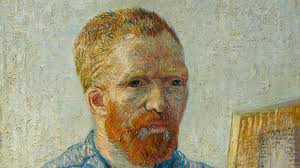

Menú
CIENCIAS
MEDIO AMBIENTE
ANIMALES
HISTORIA
Los 5 datos asombrosos sobre Galileo Galilei, un genio de la ciencia en la época medieval.
Perseguido por sus descubrimientos científicos contrarios a la Iglesia, el astrónomo, filósofo y matemático italiano tuvo una vida llena de giros.
¿Es cierto que el cáncer era menos probable en el mundo preindustrial?
Se estima que la tasa de cáncer en Gran Bretaña era del 1 por ciento antes del tabaco y las fábricas. Ahora, un nuevo estudio arqueológico apunta..
Estas remotas ruinas incas rivalizan con Machu Picchu
Una caminata en lo alto de los Andes peruanos revela deslumbrantes edificios antiguos, vistas estelares y misterioso arte de llamas.

¿Por qué Van Gogh se cortó la oreja?
Vendió pocas obras durante su vida, pero una persona de su familia fue clave para que Van Gogh fuera reconocido.